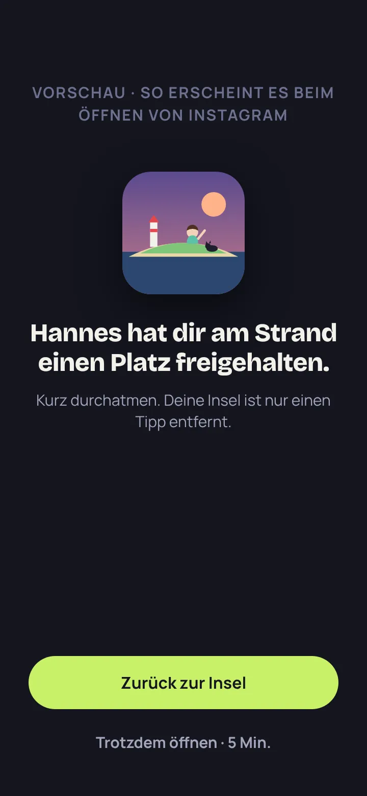
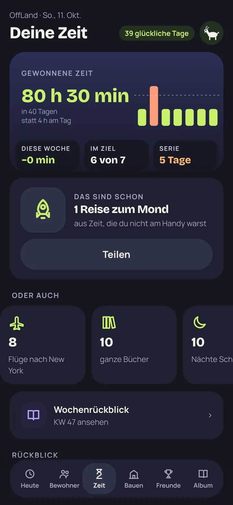
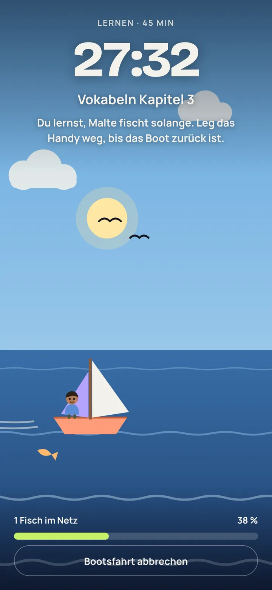
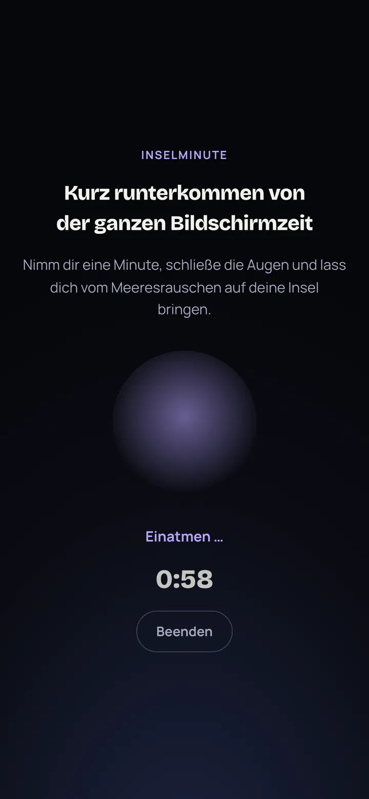
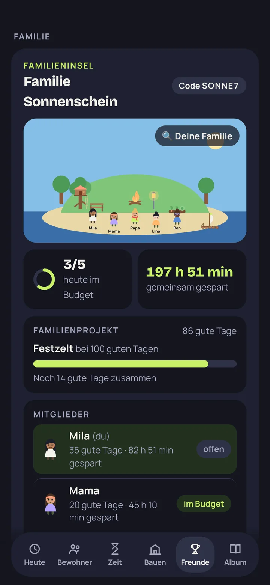
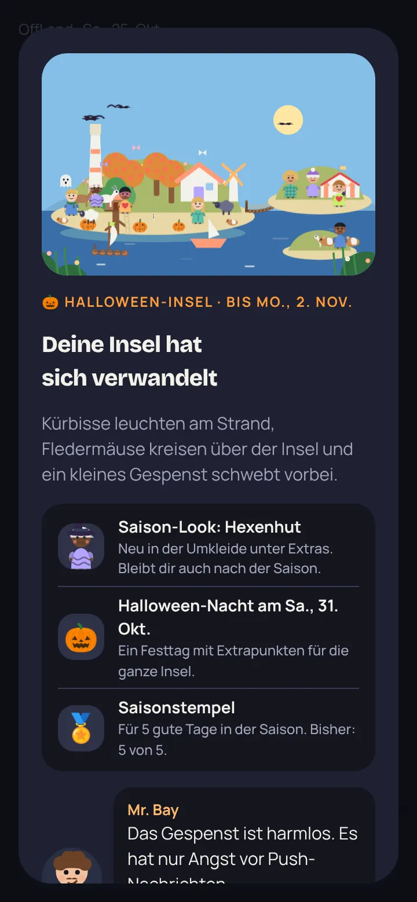
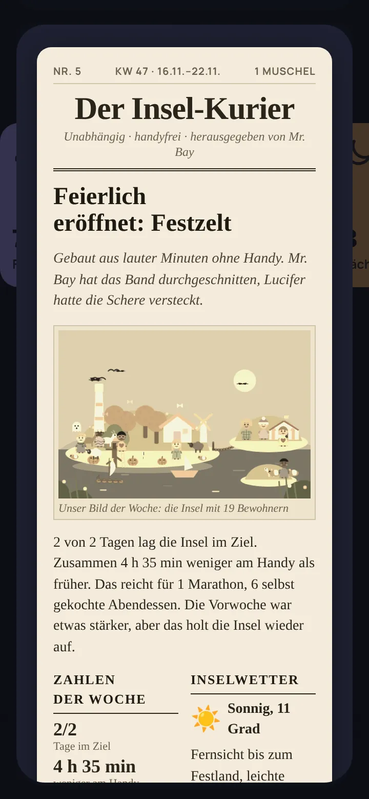
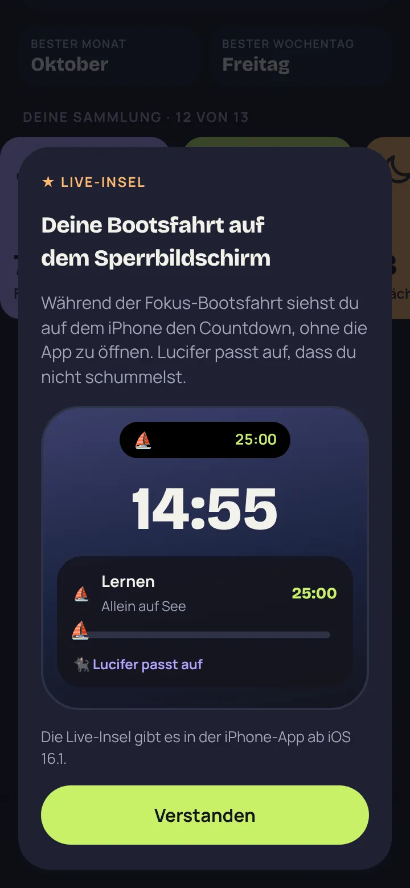

Bildschirmzeit senken, ganz ohne Verbote
Weniger Handy.
Mehr Insel.
OffLand macht aus der Zeit, die du nicht am Handy verbringst, eine kleine Insel voller Leben. Je öfter du das Handy weglegst, desto mehr Bewohner ziehen ein, desto mehr wird gebaut und desto glücklicher wird deine Insel.
Bald im App Store. Sei von Anfang an dabei:
So funktioniert's
Einmal einrichten, dann läuft’s von allein
Ziel festlegen
Wie viel Bildschirmzeit am Tag ist für dich okay? Das ist dein Budget.
Handy einfach weglegen
OffLand liest deine Bildschirmzeit automatisch aus. Du musst nichts eintragen und nichts mitzählen.
Insel wachsen sehen
Jede Minute unter deinem Budget wird zu Baumaterial, Punkten und Glück für deine Bewohner.
Bewohner
Eine Insel, die sich auf dich freut
Menschen mit Berufen und Eigenheiten, Tiere, Freundschaften und Familien. An guten Tagen sitzen alle zusammen am Lagerfeuer. An schlechten Tagen greift auch mal jemand zum Handy.
- Neu: Bewohner und Tiere aus einem Foto gestalten, das Foto bleibt auf deinem Handy
- Seltene Tiere kommen zu Besuch
- Wünsche erfüllen, Feste feiern
- Fanpost von den Nachbarinseln

Insel-Schutz Neu
Erst die Insel, dann Instagram
Du öffnest eine App aus Gewohnheit, und plötzlich steht deine Insel in der Tür: Ein Bewohner hat dir am Strand einen Platz freigehalten. Du gehst zurück zur Insel oder öffnest die App trotzdem kurz. Nichts wird verboten, du entscheidest.
- Du wählst die Apps selbst, OffLand sieht nicht, welche
- Immer, abends ab 21 Uhr oder während der Fokus-Bootsfahrt
- „Trotzdem öffnen“ gibt 1, 5 oder 15 Minuten frei
- Jedes Mal, wenn du widerstehst, gibt es Punkte für die Insel

Deine Zeit
Sieh, was du dir zurückholst
OffLand rechnet dir vor, was aus deiner gewonnenen Zeit geworden ist: Spaziergänge, Buchkapitel, ganze Tage im Jahr. Und hilft dir, sie für etwas zu nutzen, das dir wichtig ist.
- Erste Bilanz schon nach fünf Tagen, dann jede Woche ein Rückblick
- Vorhaben für morgen
- Anschauliche Vergleiche, von Buchkapiteln bis zur Reise zum Mond
- Widget für den Homescreen mit Insel, Glück und Serie

Fokus-Bootsfahrt
Du lernst, die Insel fischt
Zum Lernen, für Aufgaben oder zum Lesen: Wähl 15 bis 90 Minuten und leg das Handy weg. Solange segelt ein Bewohner raus zum Fischen. Hältst du durch, kommt das Boot mit Fang, Punkten und Baumaterial zurück.
- Lernen, Aufgaben, Lesen, Sport, Kreatives oder Abschalten
- Eigenes Ziel wie „Vokabeln Kapitel 3“
- Übersicht, wie viel Fokuszeit du geschafft hast

Inselminute
Kurz runterkommen
Eine Minute Augen zu, Meeresrauschen und ein Kreis, der mit dir atmet. Perfekt bevor das Handy abends schlafen geht. Dazu leise Inselmusik, wenn du magst.

Gemeinsam
Mit Freunden und Familie
Jede:r behält die eigene Insel, und zusammen baut ihr an einer Familieninsel. Mit jedem guten Tag von euch allen kommt etwas dazu: Lagerfeuer, Baumhaus, Floß und am Ende das große Festzelt. Mit Freunden vergleicht ihr eure Woche oder fordert euch zum Duell heraus.
- Familieninsel mit gemeinsamen Projekten
- Freundesliste, Ranglisten und Duelle
- Über 100 Dinge zum Bauen, Feste und Großprojekte
Deine Gastgeber
Mr. Bay und Lucifer
Mr. Bay ist der leicht übermotivierte Bürgermeister von OffLand. Lucifer ist die freche Inselkatze, und sie war schon vor allen anderen da. Zusammen erzählen sie dir die Geschichte der Insel in Kapiteln und haben zu deinem Tag immer eine Meinung.
- Jeden Tag ein neuer Spruch von Lucifer
- Die Geschichte von OffLand in Kapiteln, mit Fotoalbum
- Mr. Bay feiert jeden Erfolg, manchmal etwas zu laut
Für Familien
Weniger Streit ums Handy
Statt Verboten und Diskussionen habt ihr ein gemeinsames Ziel: eure Familieninsel. Jeder Tag, an dem ihr im Budget bleibt, bringt sie weiter, und alle ziehen an einem Strang.
Funktioniert für Groß und Klein, egal ob alle zu Hause wohnen oder über das ganze Land verteilt.
- Miteinander statt KontrolleJede:r setzt sich das eigene Ziel. Gezeigt wird nur, ob jemand im Budget war. Die Minuten sieht man nur, wenn man sie selbst teilen möchte.
- Gemeinsam etwas aufbauenLagerfeuer, Baumhaus, Floß und Festzelt: Jeder gute Tag von euch allen bringt die Familieninsel weiter.
- Ohne Werbung, ohne E-MailKeine Werbung, keine Tracking-Dienste. Für die Familieninsel braucht niemand ein Konto mit E-Mail-Adresse.
★ OffLand Plus
Für alle, die noch mehr aus ihrer Insel machen wollen
Alles Wichtige bleibt kostenlos. Plus ist ein Extra, das mit der iPhone-App startet. Die erste Woche bekommst du geschenkt, ohne Abo und ohne Zahlungsdaten.



- WeltreiseVier neue Welten mit eigenen Tieren, Großprojekten und Kapiteln.
- Saison-InselnDeine Insel verwandelt sich, mit Saison-Looks, Festen und Stempeln.
- Der Insel-KurierSchlagzeilen, Klatsch und Lucifers Kolumne, jede Woche neu.
- Mein InseljahrDein Monat und dein Jahr als Story, mit Bild zum Teilen.
- Live-InselDie Bootsfahrt als Countdown auf dem Sperrbildschirm und in der Dynamic Island.
- Insel-Schutz ProEigene Zeitpläne: morgens, bei der Arbeit, nachts.
- Mehr aus deiner ZeitKalender, Bestwerte, Hochrechnung und die Auswertung deiner Fokuszeit.
- Goldene Lagune und Plus-LooksDeine Insel in Gold und Türkis, Kronen, Goldbrillen und goldenes Fell.
Mit Musik aus der App
„So entspannt kann es sein, mit weniger Bildschirmzeit.“
Die ruhige Inselmusik wird direkt im Handy erzeugt. Unsere Katze hat sie offiziell abgenommen.
Datenschutz
Deine Daten bleiben bei dir
OffLand ist kein Werkzeug, um dich länger am Bildschirm zu halten. Im Gegenteil.
- Keine Anmeldung nötig, deine Insel liegt auf deinem Gerät
- Keine Werbung und keine Tracking-Dienste
- Die iPhone-App sieht nur deine Gesamtzeit, nicht welche Apps du nutzt
- Fotos für deine Bewohner werden nur auf dem Handy ausgewertet und nie hochgeladen
- Online-Funktionen und Statistik nur, wenn du sie einschaltest
Fragen
Gut zu wissen
Was kostet OffLand?
Die Insel und alle Grundfunktionen sind kostenlos, auch die Familieninsel, die Fokus-Bootsfahrt und der Insel-Schutz. Dazu gibt es optional OffLand Plus mit neuen Welten, Saison-Inseln, dem Insel-Kurier und mehr, monatlich, jährlich oder als Familien-Abo. Die erste Woche Plus ist geschenkt, ganz ohne Abo. Und wer Freunde einlädt, bekommt mit ihnen zusammen einmalig einen Monat Plus.
Sperrt OffLand meine Apps?
Nein. Der Insel-Schutz ist freiwillig und erinnert dich nur: Öffnest du eine App, die du selbst ausgewählt hast, wartet erst deine Insel auf dich. Mit einem Tipp kannst du die App trotzdem öffnen. Welche Apps du auswählst, erfährt OffLand nicht.
Brauche ich ein Konto?
Nein. Du legst nur einen Namen für deine Insel an. Für Freunde, Ranglisten und das Online-Backup kannst du die Online-Funktionen einschalten, auch dafür brauchst du keine E-Mail-Adresse.
Wird meine Bildschirmzeit automatisch erfasst?
Ja. OffLand liest über Apples Bildschirmzeit deine Gesamtzeit am Handy aus, ganz automatisch. Du musst nichts eintragen. Welche Apps du nutzt, sieht OffLand dabei nicht.
Wann kommt die App in den App Store?
Bald. Trag dich auf die Warteliste ein, dann sagen wir dir Bescheid.
Gibt es OffLand auch auf Englisch?
Ja. Ist dein Handy auf Englisch eingestellt, erscheint OffLand automatisch auf Englisch. In den Einstellungen kannst du jederzeit umschalten.
Gibt es OffLand für Android?
Eine Android-App ist geplant, ebenfalls mit automatischer Bildschirmzeit. Trag dich auf die Warteliste ein, dann sagen wir dir Bescheid.
Leg das Handy weg.
Deine Insel wartet.
Trag dich ein, dann sagen wir dir Bescheid, sobald OffLand im App Store ist.